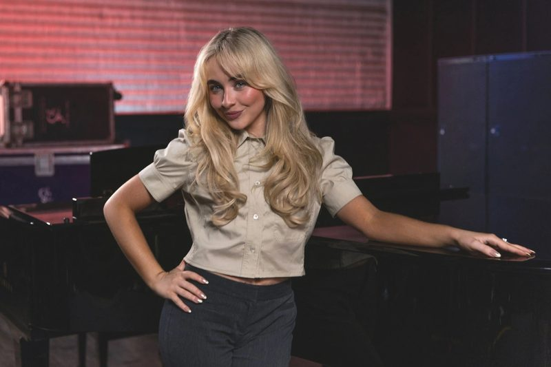
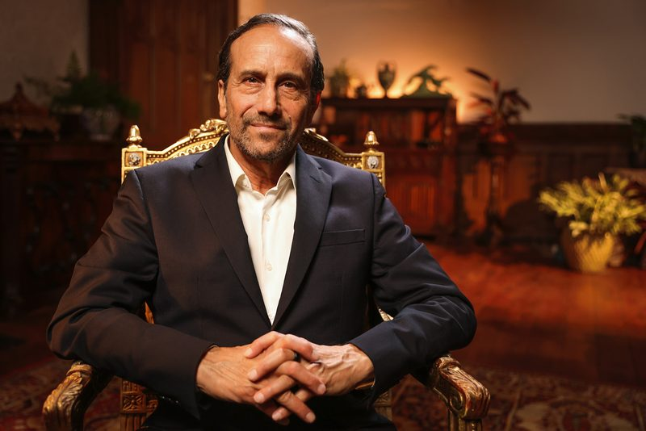
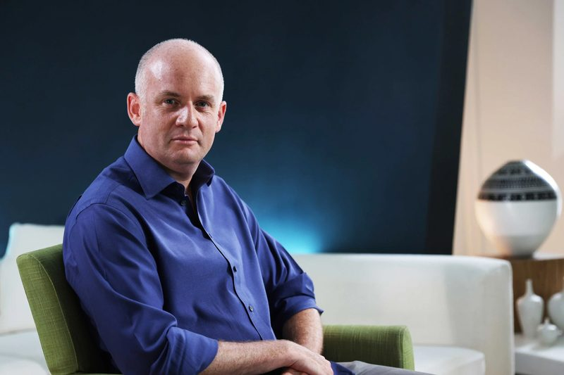
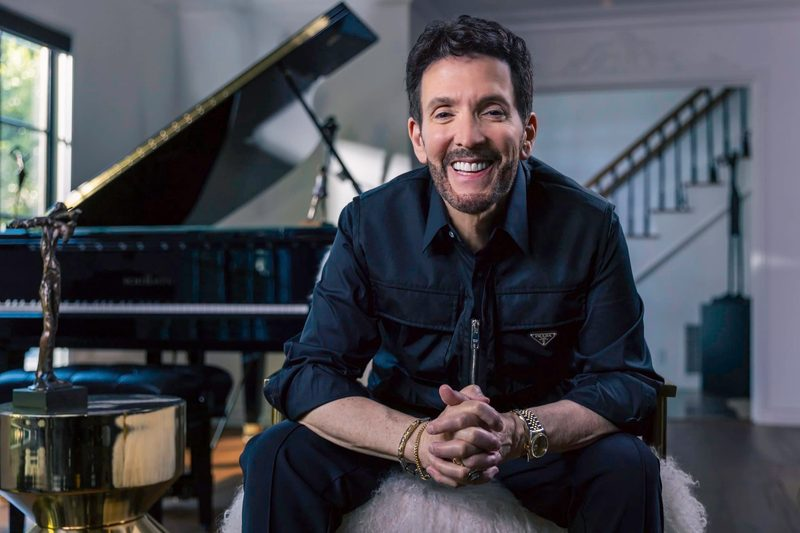
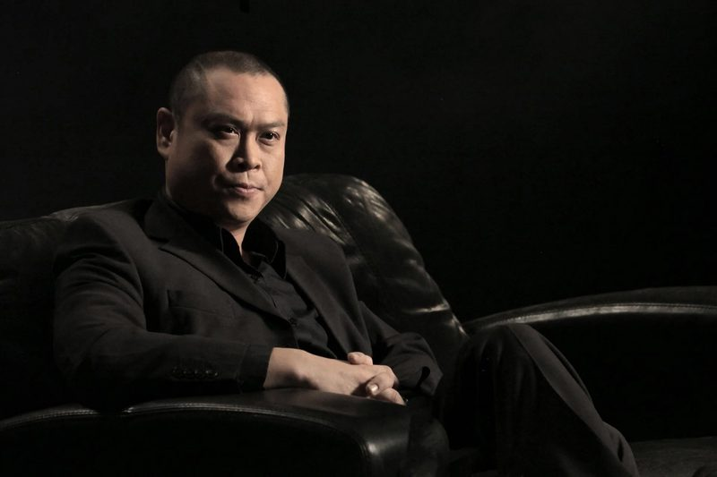

Industry
Portraits made on commission for BBC Maestro, Vets4Pets and Keolis Amey Metrolink, including Sabrina Carpenter, Dr Rangan Chatterjee and Richard Greene for BBC Maestro.
BBC Maestro










